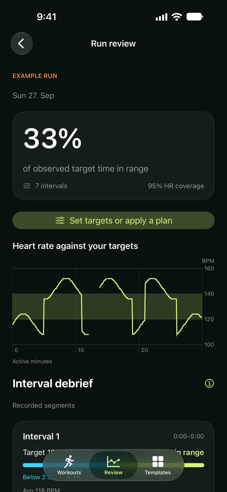
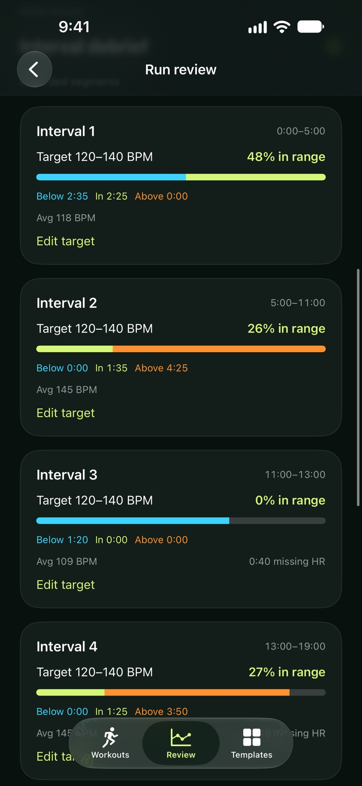
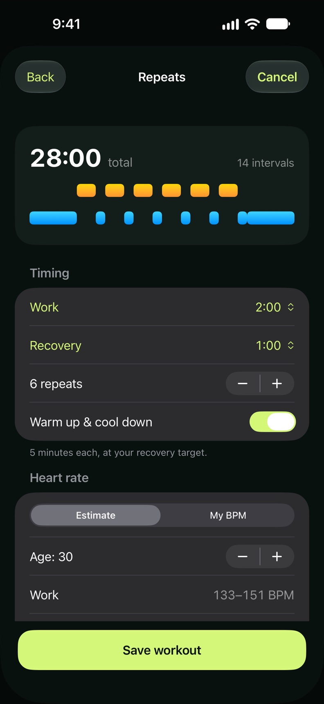
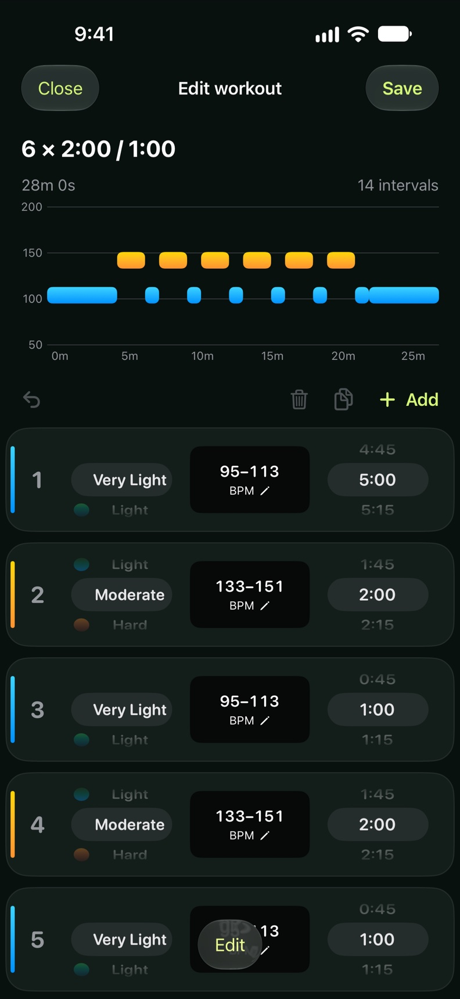

A new chapter for HeartRateHub
Your run.
Understood.
You did the intervals.
See how your heart rate matched the plan.
Review each effort and recovery against your own BPM targets. Keep recording with Apple Workout.
& Apple Watch

The run is only half the story
Make sense of
every effort.
A whole-run average can hide the details.
Give your work and recovery their own review.
- 01 / RECORD
Run your way.
Record with Apple Workout, or follow a timed plan with the included Watch app.
- 02 / REVIEW
Bring your targets.
Choose a BPM range for each recorded interval, or compare your run with a saved timed plan.
- 03 / UNDERSTAND
See the full picture.
See time below, within and above target. Missing readings stay visible. Export the details as CSV.
A closer look
Less guessing.
More clarity.
From the first warm-up to the last recovery. A focused toolkit for runners who train with heart rate.
Screens from the upcoming release. Review screens use example data. Available intervals depend on the recording and Health permissions.



Your wrist.
Your workout.
Follow interval countdowns and heart-rate targets on Apple Watch. Choose the out-of-target reminders that work for you.
Small screen.
Bigger picture.
Plan and review on iPhone or iPad. English, German, Japanese and Simplified Chinese are included in the new release.
Your health.
Stays yours.
Reviews are processed on-device. No developer account, ads or third-party analytics. You choose Health access and what to export.
How your data is handledGood questions
Before your
next run.
I already use Apple Workout. Why RunDebrief?
Keep your recording routine. RunDebrief adds a focused review of how each available recorded interval matched the heart-rate target you choose, with time below, within and above target. You can also compare against a saved timed plan and export an interval report.
Does it import my Apple Workout targets?
No. You choose the BPM targets in RunDebrief. Recorded interval boundaries are used when available; otherwise you get a whole-run review. Saved-plan comparison supports timed steps with usable pause timing, not automatic alignment to distance-based plans.
Do I have to record on an Apple Watch?
The included recorder requires Apple Watch. Reviews can use compatible runs and walks saved to Apple Health by other recording apps. The available intervals and heart-rate readings depend on that recording. Plans and templates can be used without Health access.
What if my heart-rate readings are missing?
Missing readings remain visible. Target percentages use the observed time, and data coverage is shown alongside. Unfinished intervals are identified separately. A review is a comparison with your chosen targets, not a medical assessment or fitness score.
Will I need a subscription?
The upcoming RunDebrief release is planned as one paid download with every feature included, without a Pro unlock or required subscription. Final pricing will appear on the App Store when the release is available. The current store listing is the older HeartRateHub version.
I already have HeartRateHub. Is this the same app?
Yes. RunDebrief is the next chapter of HeartRateHub. This website previews the new design and features, which are not yet available in the public release. Follow the existing App Store listing for the update, or email support if you need help with your current version.
Coming next
A little more insight.
A lot more intention.
RunDebrief is getting ready for the App Store.
One purchase. Every feature. Your next chapter of running.
Opens HeartRateHub, the previous version.
The RunDebrief update is not yet live.